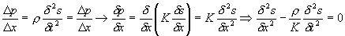
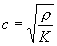

Ljudhastigheten för gaser
Betrakta som förut endminesionellt ljud som utbreder sig i ett rör med tvärsnittsytan A. Betrakta vidare en snutt av röret med längd
D x. Före denna snutt ska vi nu ställa upp Newtons kraftekvation F=ma:Kraften på snutten är skillnaden i tryck mellan de bägge sidorna = A
D pMassan är densiteten gånger volymen dvs m=
r A D xAccelerationen blir vidare andraderivatan av läget (=förskjutningen) map tiden.
Sammanställer vi detta och dividerar med
AD x får vi: där vi använt sambandet mellan tryck och förskjutning från sida 1.
Vi ser att detta faktiskt är vågekvationen om vi identifierar faktorn framför tidsderivatan som 1/c2
Vi får då att vilket ju var den sökta satsen.